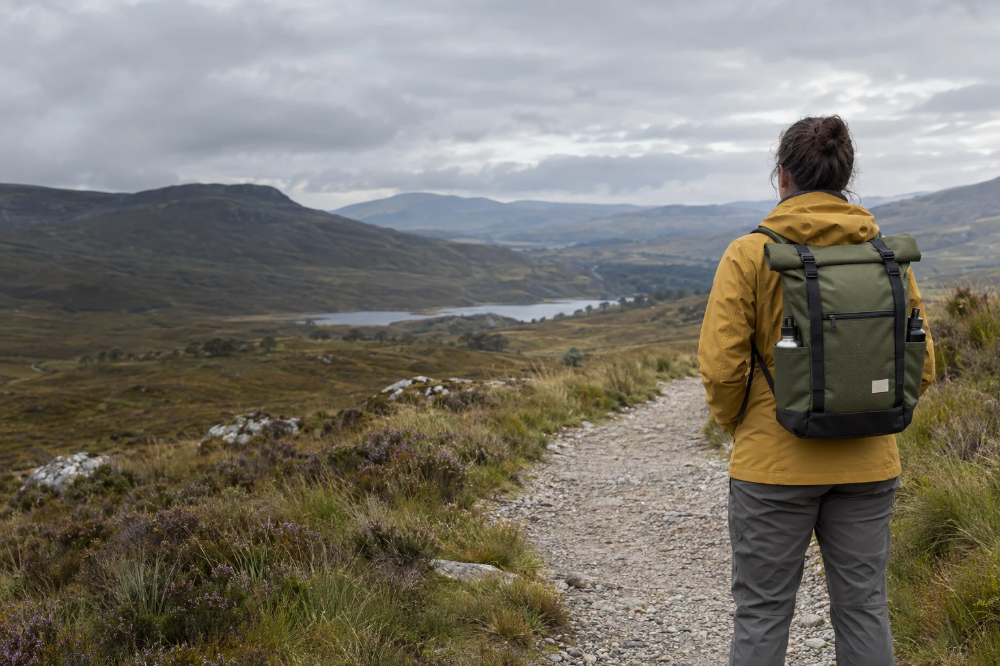

Inverness · Since 2020
Close to home.
Open to the day.
Cairnfield is a fictional independent equipment brand with a simple brief: make the gear that helps an ordinary walking day happen.

Thirteen people. A small range.
Fewer things,
well understood.
The fictional team brings together product design, sample making, customer support and everyday operations in Inverness. We keep the range small so capacity, pockets and care can be explained properly.
Ridge is the roomier choice. Moor carries a lighter load. The pad makes a stop more comfortable. We do not need an expedition story to explain why these things are useful.
What the brand would offer
Direct sales to UK walkers, complete specifications and a clear route into fit and repair conversations. This website shows how those decisions would work without opening a real shop.
A fictional company. A working website.
Cairnfield Equipment is a concept commission created for the Fieldwork Digital portfolio. The people, history, products, prices and specifications are invented and internally consistent. Original generated photographs show the design direction; they are not evidence of manufacturing or testing.
The kit builder keeps selections in this page only. Reloading or leaving clears them; a product link may preset that item again. A downloaded note remains on your device. No payment, live stock, shipping, accounts, messages or warranty service is connected.
Return to the project portfolio ↗